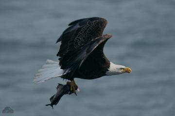

Cull: pick the keepers
Atelier groups bursts and repeated shots of the same scene, suggests the best of each group, and lets you keep or drop shots with single keys.
Start culling
- Before importing
- Tick Cull before importing in the Import dialog; the button becomes Continue to Culling… and the same dialog moves on to the Cull step. Only keepers go into the import entry. The rest are still cataloged, flagged Rejected, so you can look again later.
- After importing
- Right-click an import in the sidebar › Cull…, or Library › Cull Import…. Keepers are flagged Picked and the rest Rejected; nothing is removed.
The Cull view



 ✓
✓


- Match and Grouping at the top. Same Frame groups only shots framed alike (someone blinked, moved slightly). Similar Shots (the default) also groups the same scene reframed or zoomed a little. The Grouping slider, from Tight to Loose, regroups instantly. It starts at Tight, so only shots that really match are grouped; slide toward Loose to group more.
- Groups as rows. Keepers have a check; dropped shots are dimmed. Single shots are listed last and kept. Drag the line between the groups and the large photo to make the list wider or narrower; the photos wrap to fit.
- The focused photo, large, with what was measured: its sharpness against the group's best (on the faces, or the main subject), how many people have their eyes open, and its exposure. Atelier marks the best one by Pick By Suggested and starts it as the keeper. A dropped photo also says why, in orange: the same reasons its note will get.
- Keys, Write reasons to notes, and Cancel and Import N Photos (or Done when culling an import). Before importing, this line shows the photos being copied to your library while you cull.
- Pick By and Advanced checks (slower): how the keeper of each group is suggested. See Picking the keeper.
Zoom in on the photo
The large photo zooms as in Loupe and Develop: double-click it or press Z to switch between Fit and 100%, pinch or hold ⌥ and scroll to zoom freely, and drag to move around. The bar under the photo has the same Fit, Fill, 100% and 200% buttons. The zoom stays as you move to the next photo, so you can check the same eyes or the same spot of focus across a group. Zooming here doesn't change Loupe's or Develop's zoom.
Show Subject: what was measured
Tick Show Subject in the bar under the photo to see what Cull measured. A dashed orange box shows the subject its sharpness was read on: the faces, Vision's main object when there are no faces big enough, or the whole frame when nothing stood out. Its label gives the sharpness against the group's sharpest shot. Each face has a box in green (eyes open), yellow (half closed), red (closed) or gray (too small or turned to check), and after the Advanced checks whether it's smiling. If a photo says "Subject softer" but looks as sharp as the keeper, compare the boxes on both: a different main object in each shot means the two were measured on different things.
Note markers
A note can point at a spot on the photo. In the notes panel (⌥⌘N) click Pin to Photo under a note, then click the photo where it belongs; Esc stops. The spot shows on the photo as a numbered marker with the note's first words, and the same number shows beside the note. Remove Pin takes it off. Cull pins its own reasons to the face with closed eyes. Turn Note Markers (in the bar under the photo) off to hide them all. Markers show only here, in the Cull view and when you look at a group again: never in Loupe, Develop or anything you export.
Picking the keeper
Pick By changes which photo of each group is suggested; the groups stay the same. Changing it suggests again at once, nothing is read again. It's remembered for the next cull.
- Balanced
- The default. Fewest people with eyes closed, then a sharp subject, good faces and exposure; Apple's aesthetics score breaks a tie. A closed eye counts for more than a small loss of sharpness: a soft photo can be sharpened a little, a closed eye can't be opened.
- Sharpest Subject
- The sharpest faces (with Advanced checks, the eyes themselves), or the main subject when there are no faces. Background detail doesn't count, so a busy sharp background can't beat a sharp face on a soft one.
- Everyone's Eyes Open
- The fewest people with eyes closed, then half closed, then the sharpest.
- Best Exposure
- The least clipped highlights and crushed shadows, closest to the group's usual brightness, then the sharpest.
- Best Expression
- Eyes open first, then the most smiles, then the sharpest. Smiles are read by the Advanced checks, so choosing it turns them on; until they finish it picks like Everyone's Eyes Open.
- Classic
- Atelier's earlier pick: the sharpest whole frame plus the best face's quality.
How eyes are checked
For every face, Atelier measures how open the eyes are and compares each person with the same person in the group's other shots. So naturally narrow eyes, glasses and squinting smiles aren't called closed: only eyes much less open than that person's own widest are. Faces turned away, and faces too small to see at the standard size, are left out and the caption says "not checked".
Advanced checks (slower)
Off by default. With it on, Atelier reads every photo in a group again from a large copy, three to four times the standard size: small faces in group shots get their eyes checked, and sharpness compares the eyes themselves instead of whole faces. A face model built into Atelier (Google's MediaPipe Face Landmarker, which runs on your Mac) also reads each face's blinks and smile. Its blink score then decides whether eyes are open, half closed or closed, again against the same person in the group's other shots, and is more reliable than the eye outline on small or squinting faces. The caption adds "Smiling: 3 of 5", and a dropped photo can say "Fewer smiles". It takes roughly a fifth of a second more per grouped photo, starting with the focused group; single shots are skipped, since they're always kept. The top of the view shows its progress, and switching it off stops it. Your Keep and Drop clicks stay as they are when it finishes.
Reasons on dropped photos
With Write reasons to notes on (the default), finishing the cull gives each photo not kept a note by Cull with a bullet for each measured reason, compared with its group's keeper, for example:
Not kept: group of 6 (Similar shots), keeper DSC_0102.NEF. - Eyes closed: 2 of 5 people (keeper: none) - Subject softer: 58% of the keeper's sharpness, looks like motion blur - 1.3 stops darker than the keeper
Only what was measured is written. Kept photos get no note. Culling again replaces Cull's note, unless you edited it: then yours stays and the new one is added. A photo kept later on another look keeps its note, marked Kept later.
Keys
| ← → | Previous or next photo. |
| ↑ ↓ | The group above or below, at the same place in the row. |
| P | Keep. |
| X | Drop. |
| Space or double-click a thumbnail | Switch between keep and drop. |
| Z or double-click the photo | Zoom between Fit and 100%. |
| Return | Finish. |
| Esc | Cancel (while a note waits to be pinned, stops that instead). |
The keys work as soon as the Cull view opens; there's nothing to click first. The list only scrolls when the photo you move to isn't fully in view, and then just enough to show it. Clicking a photo never scrolls.
A group can keep several shots. A RAW+JPEG pair counts as one shot: keeping or dropping it applies to both.
Look at a group again
Every photo culled with others shows ◫ 4 (the group's size) in the grid. Select it and choose Photo › Show Cull Group (⇧⌘G), or right-click › Show Cull Group, to see the keeper next to every shot it beat, and change your mind.